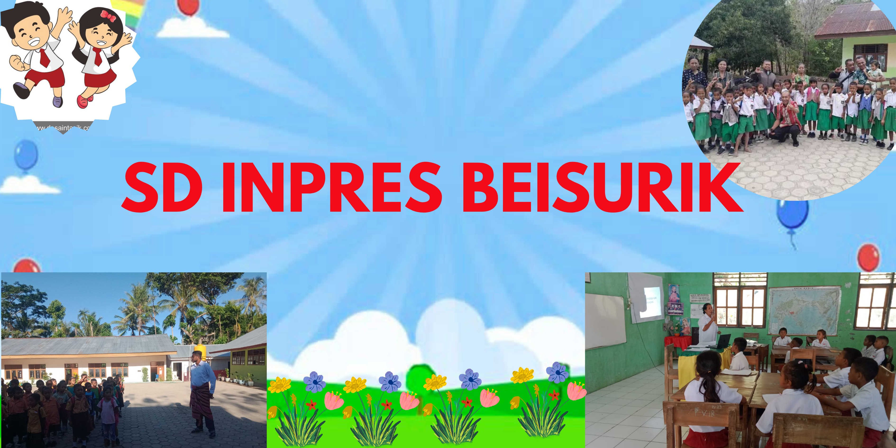

HTML Creator
Puji syukur kepada Tuhan Yang Maha Esa, SD Inpres Beisurik kini memiliki website resmi sebagai bentuk komitmen mengikuti perkembangan teknologi informasi di dunia pendidikan. Website ini menjadi media resmi untuk menyampaikaninformasi seperti kegiatan sekolah, pengumuman, prestasi siswa, dan profil guru.
Diharapkan website ini menjadi jembatan komunikasi yang efektif antara sekolah, orang tua, siswa, alumni, dan masyarakat, serta mendorong kolaborasi untuk memajukan mutu pendidikan.
Terima kasih kepada seluruh tim atas kerja kerasnya. Semoga website ini bermanfaat dan menjadi awal transformasi digital di sekolah.
HTML Creator